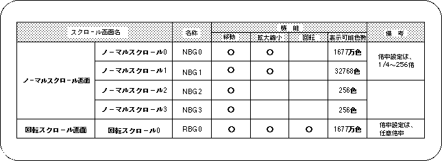

Return to previous page | Return to menu | Go to next page
In SEGA Saturn, it is possible to display up to 5 scroll screens simultaneously in one screen. Scrolling is divided into a normal scroll screen and a rotary scroll screen, and the normal scroll screen is further divided into four types. In SGL, these five types of scroll screens can be output to the monitor at the same time. The table below summarizes the types of scroll screens and the main functions of each (details and how to set the scroll function are described in “8-6: Scroll function setting”).

Note) Refer to the scroll function item for details of the scroll function.
The normal scroll screens “NBG0 to 3” have different maximum number of colors and enlargement / reduction functions (refer to “8-6: Scroll function” for details).
The scroll screen is set to 256 colors by default.
Up to 5 scroll screens can be output at the same time, but 5 screens are not always available. This is because the maximum number of accesses to the VRAM that stores scroll data during a single processing period is fixed, and some restrictions are imposed on scroll drawing.
For details, refer to “HARDWARE MANUAL vol.2: VDP2 User's Manual”.